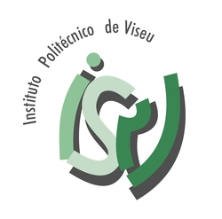
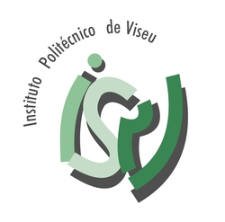

| 22 de Junho de 2017 | |
|---|---|
| 09h00 |
Receção dos Participantes |
| 09h30 |
Sessão de Abertura |
| 10h00 |
Uma Justiça Amiga das Crianças – As Diretrizes Europeias |
| 11h15 |
Pausa para Café |
| 11h30 |
Início dos Trabalhos dos Grupos de Reflexão e Debate |
| 13h00 |
Almoço Livre |
| 14h30 |
Grupos de Reflexão e Debate |
| 16h00 |
Síntese dos Trabalhos dos Grupos de Reflexão e Debate |
| 16h30 |
Pausa para Café |
| 16h45 |
Comentário Final |
| 17h15 |
Sessão de Encerramento dos Trabalhos |


 
